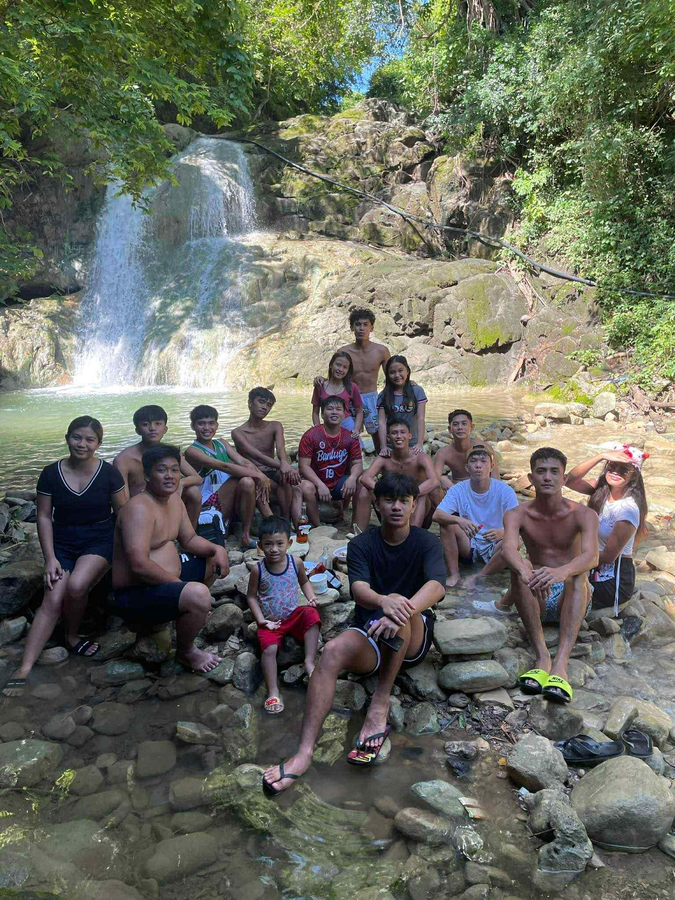
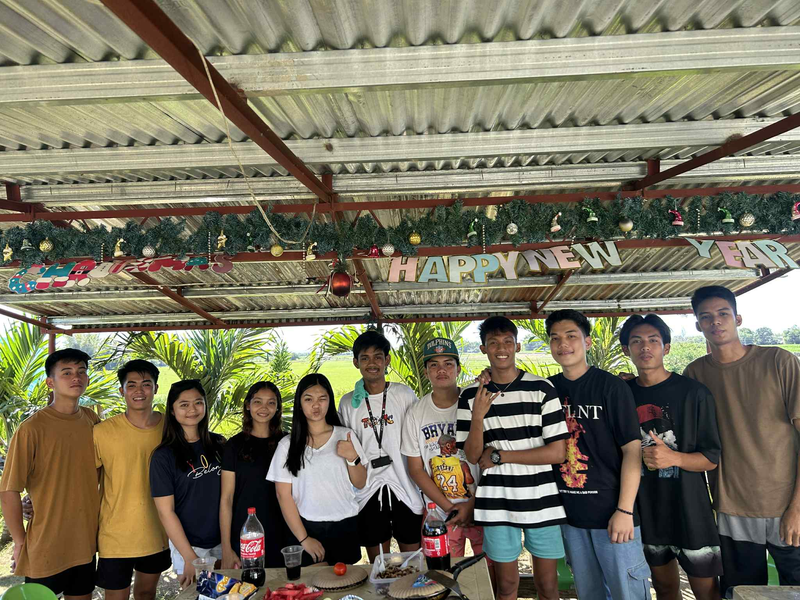
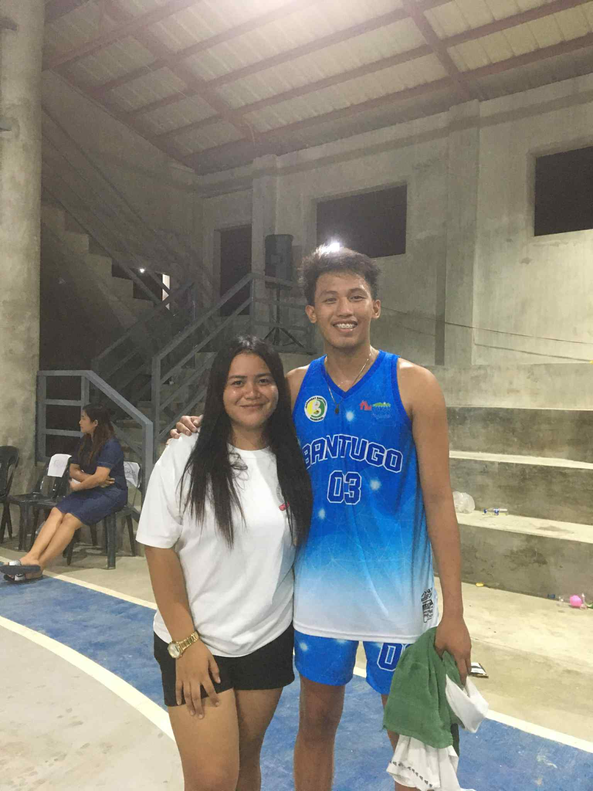
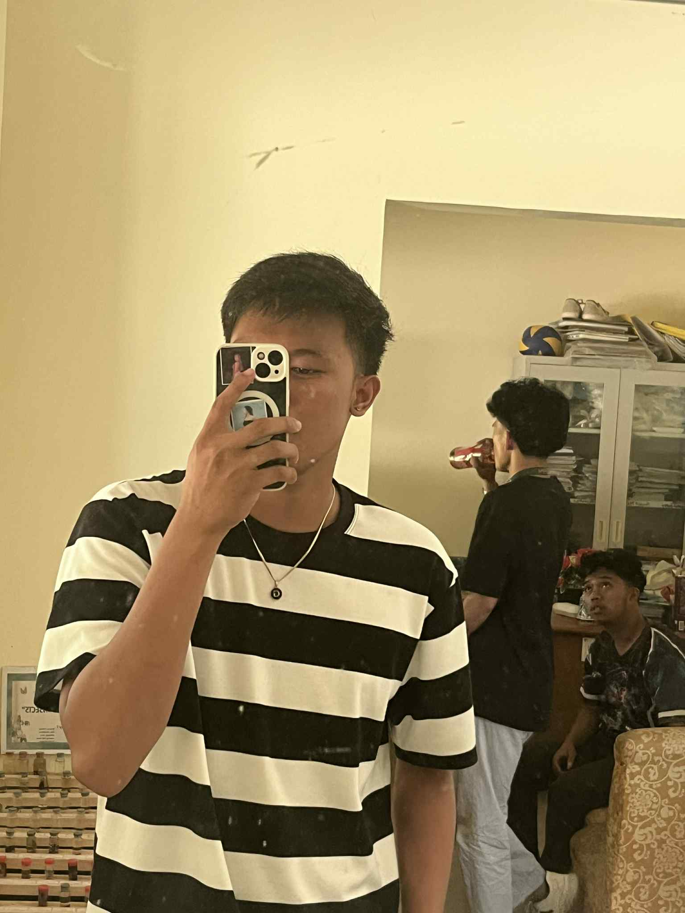

Pajo's Blog — Timeline
Dito makikita ang mga huling pangyayari, photo-captures, at mini posts. Click ang image para lumaki.
Aug 20, 2025
Mini Hangout with the Guji Boys
Nag-enjoy kami sa maikling lakad at kwentuhan. Ang saya ng reunion na 'to — kulang na lang ang iba!
Jul 15, 2025
Graduation Flashback
Throwback sa graduation day ng daycare. Nakakatuwang balikan ang mga litrato na ito.
May 02, 2025
Unang Uniform ng ES Boys
Picture ng unang uniform na ginamit ng team — alaala ng teamwork at saya.
Graduation in daycare

The Guji Boys!!!
with Ma'am Marga

Batch 2015-2016
Team Bantugo
First Uniform of ES Boys
About
Hi! I’m Romano Joshua Giro C., the creator of this system. I’m an IS Student who is learning how to create a basic website. I built this site to practice my skills and inspire others who want to learn programming.
For inquiries or collaboration, feel free to message me:
giroromano123@gmail.com
Profile
- Full Name
- Romano Joshua Giro C.
- Age
- 20
- giroromano123@gmail.com
- Location
- Bantugo Nagbukel Ilocos Sur
- Contact Number
- 09915725285
- Hobbies
- Playing Basketball, Playing Online Games, Listening Music, etc.
Gallery

